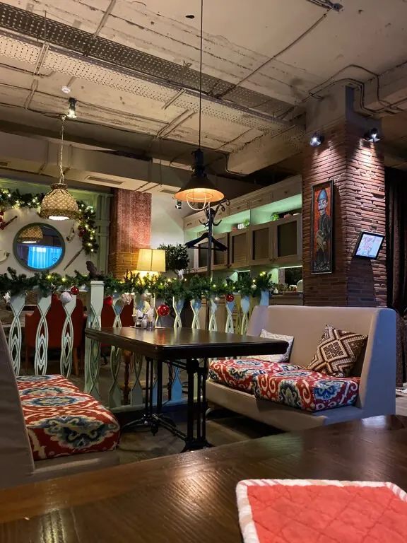
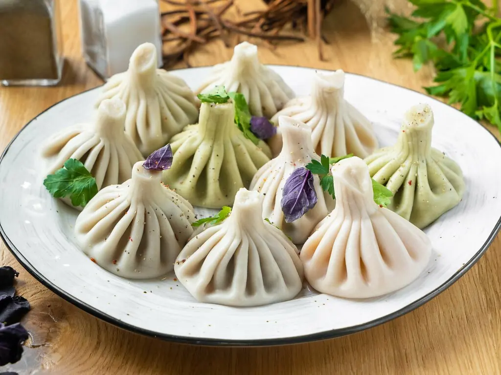
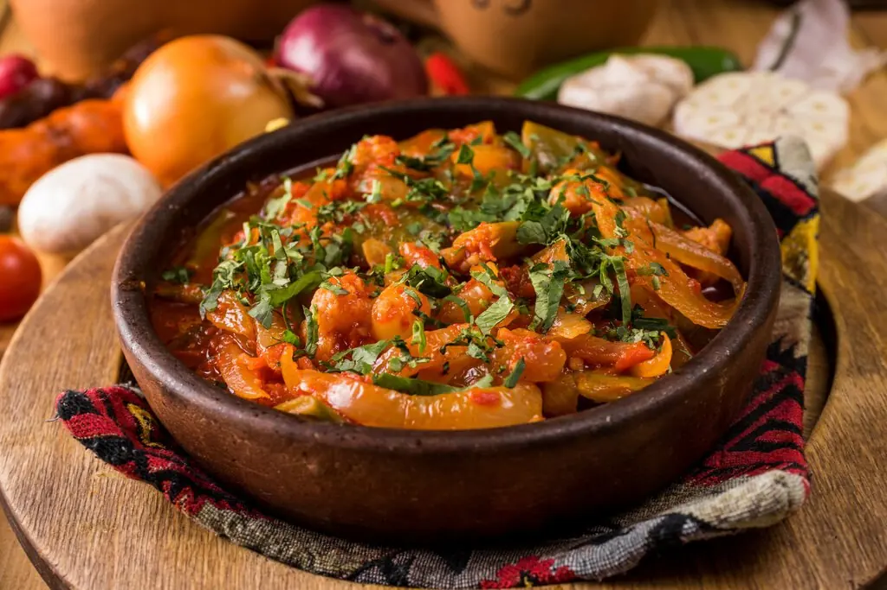
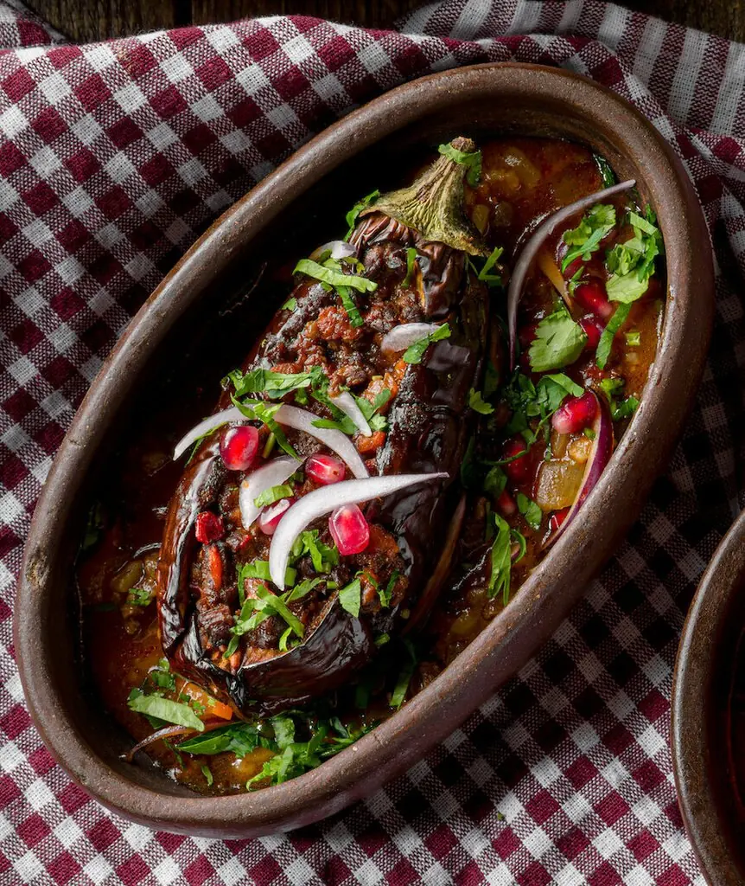
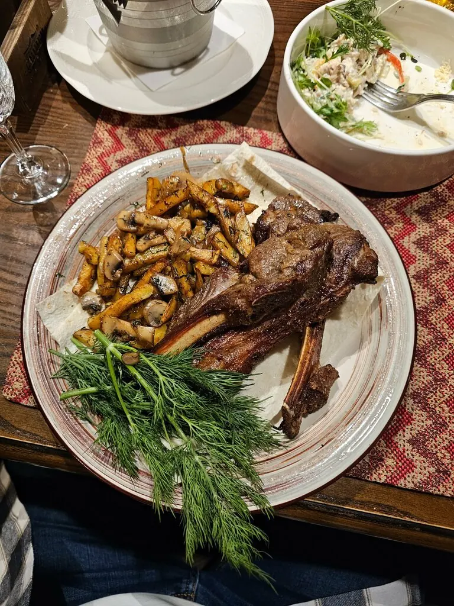
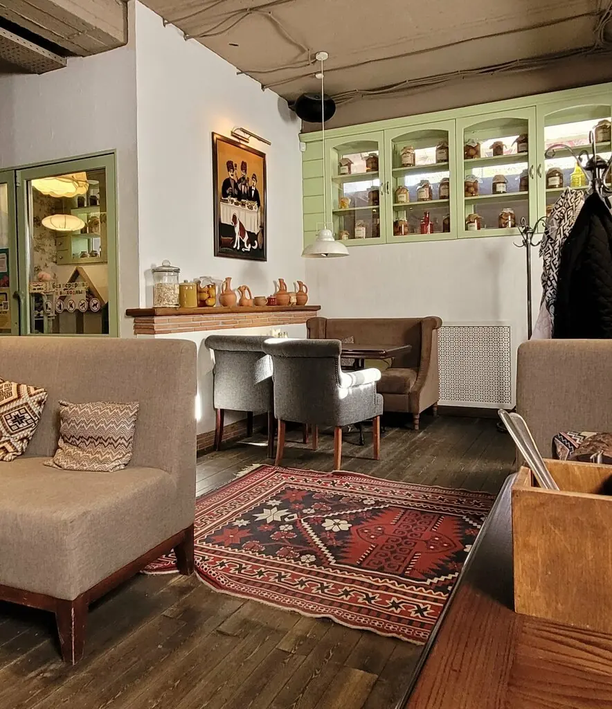

Сациви
Грузинская кухня с усами: хинкали ручной лепки, тандыр и чёрные хинкали, о которых говорят в отзывах.
5,0 · 1102 оценки

Большой стол за раз
Что на кухне
Часть меню с Яндекс Карт, цены уточняйте у официанта.
Вкусно на фото





Осенние новинки очень необычные и вкусные, а чёрные хинкали это что-то с чем-то.Максим Бураченко
Очень вкусно, особенно хинкали, пхали, пироги. А Наполеон просто божественный.Марина Пренко
Замечательное место, всё вкусно, вежливое обслуживание.Ольга Трофимова